Mosaics of Albania on Stamps
It is the merit of the postal administration in Albania that, year after year, it presents us beautiful extracts from the cultural treasures discovered relatively recently in this country.

It can be said, without exaggeration, that the Albanian post office is a champion of world philately in the field of presenting the ancient and then the modern mosaic.
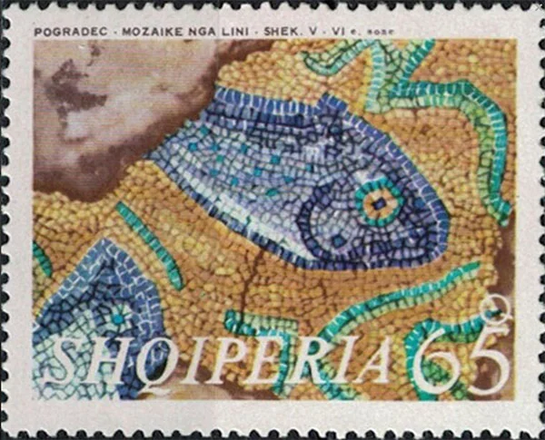
The Tirana Mosaic (Albanian: Mozaiku i Tiranës) is a landmark in Tirana, Albania.
It is believed to have been part of a 3rd-century Roman house, referred to by local archeologists as the 'Villa rustica'. Later, in the 5th and 6th centuries, a Paleo-Christian Basilica was built around this site. It was declared a cultural monument of the first category in June 1973.
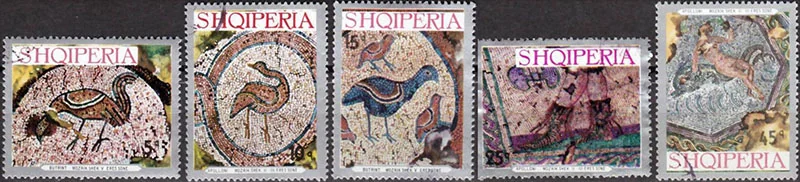
The ruins of this Paleo-Christian Basilica were discovered in 1972. In 2002, some other objects were found around the ruins of the house, and today they form the archaeological complex in Tirana.
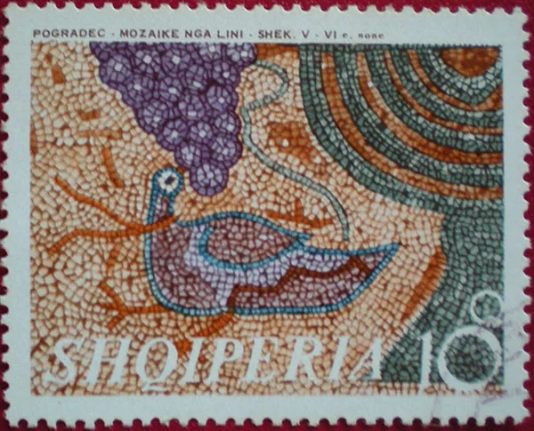
It is the only archaeological monument within the city. Some of the ancient mosaics discovered at the site that feature diverse geometrical patterns and depict poultry and fish. It was re-opened to the public on 23 January 2010. Source
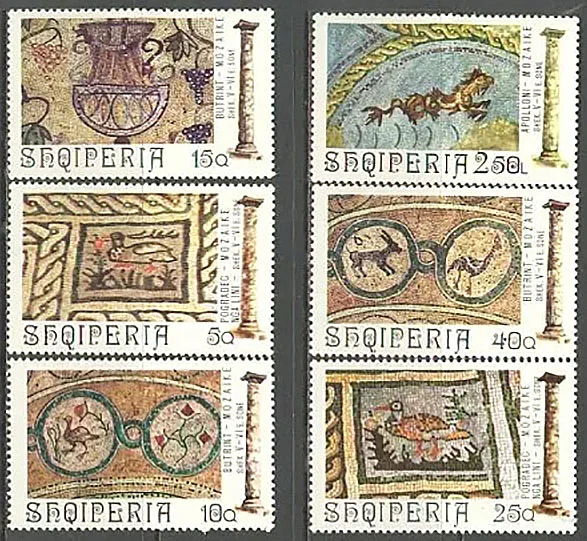
The Mosaic of Tirana is a cultural monument of the first category declared by Decision No. 1886, dated 10.06.1973. The Mosaic of Tirana, was discovered in 1972 during construction of a building in the neighborhood Partizani. Archaeological excavations brought to light a cult building where the central nave and narthex have mosaics floor.
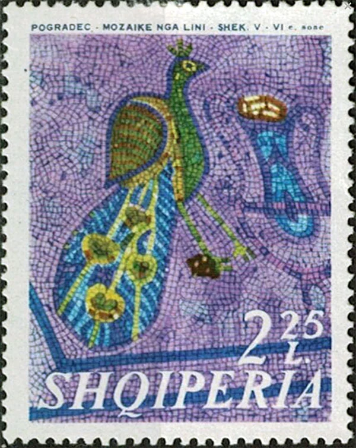
Tirana Church represents a building with the longitudinal axis pointed to north-east direction, consisting in a central hall (naos) and a front hall (pronaos).
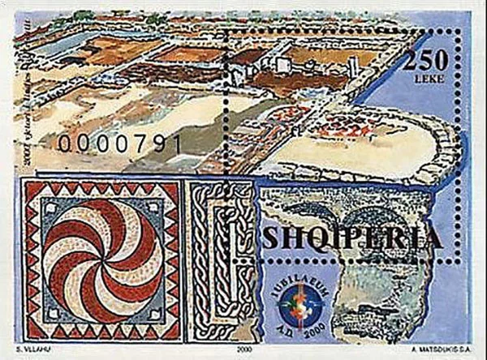
The Central Hall has floor with mosaics ends with the semicircular apse (abside) at a higher level than the front hall. Other residential environments were found on the north side and the other sides of the building.
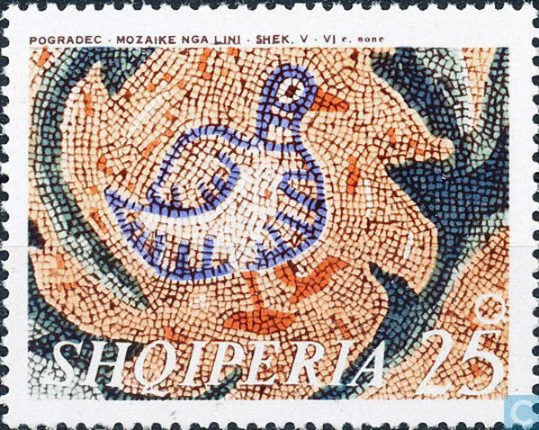
According to the construction phases the building is used in a second time as a church, that is seems by the building of front hall, its mosaic contains religious symbols such as crosses, fish and birds, while the central hall mosaic has more geometric decoration.
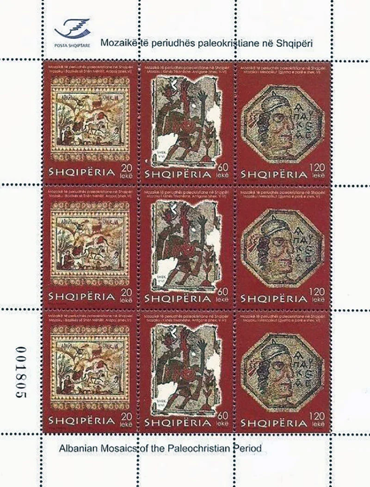
According to this, the church can be dated to half of IV century, when it was not yet a clear architectural typology. Mosaic of Tirana regarding the construction materials and the technique used belongs to the Paleochristian art. Mosaic admitted on a layer that smooth out the cobblestone made of river shingles using mortar, lime and tile powder. Mosaic of Tirana is restored in 1976. Source: Tiranatours.
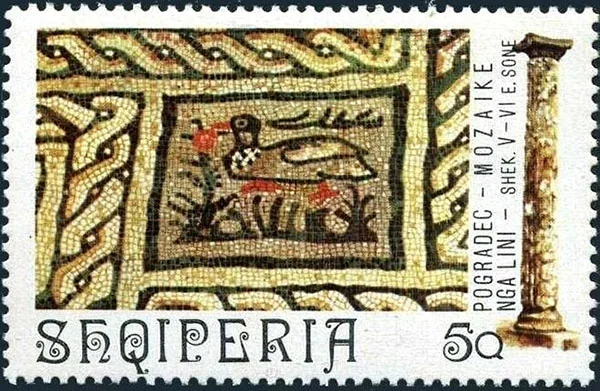
Mosaic of Tirana – discovered in 1972, while creating the no. 9 neighborhood “Partiziani”, it is the only archaeological monument within the city. It belongs to a Roman rural center (Villa Rustica) in the 3rd century AD. According to the authors in the V-VI century AD, it was built above an early Paleochristian Basilica. Source: Tiranotour.
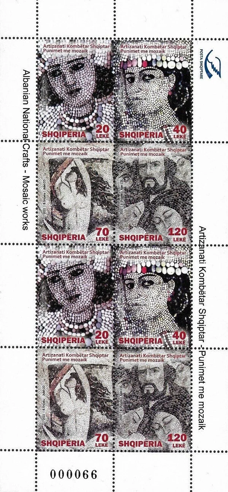
Tirana, the capital city of Albania, did not exist in Antiquity as an inhabited centre, it was considered simply a rural area, the residential territory of Dyrrachium patricians, as was Ercolano for Pompeii.
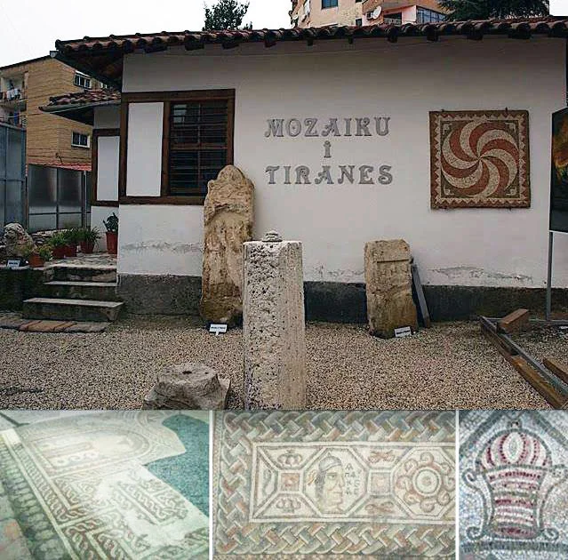
In 1972 in Tirana, during the construction of a building, the remains of a rustic villa built in Roman Period were brought to light accidentally, and some of the rooms were decorated with polychrome mosaics.
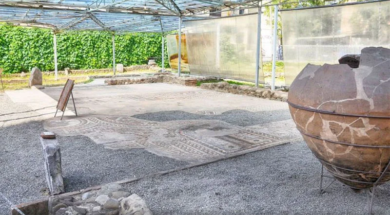
This villa was used for more than four centuries and it has several phases of life, and for this reason it was dated by the archaeologists between the end of the 1st and the 5th century AD. Source: Elda Omari "The Roman Villa of Tirana (Albania) and Its Mosaics."
Original article: Countries/Albania/2024-Albania-Mosaics.htm. This is a local design preview; some legacy references and links still require editorial checking.